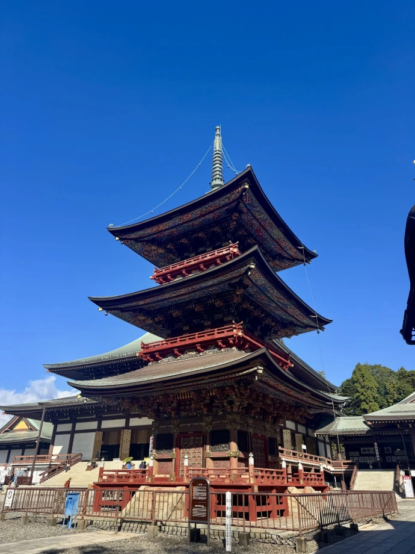
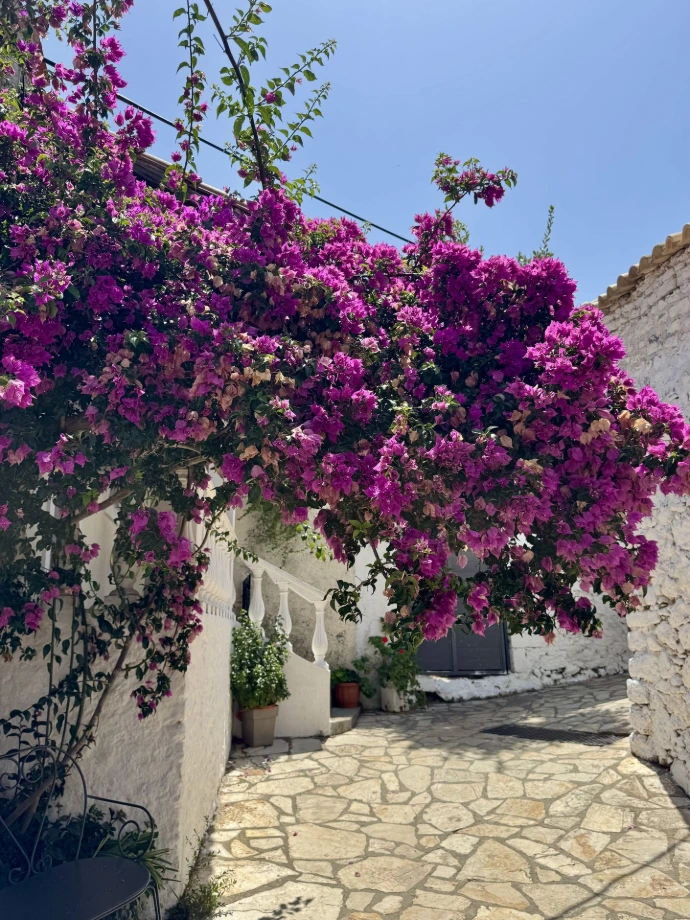
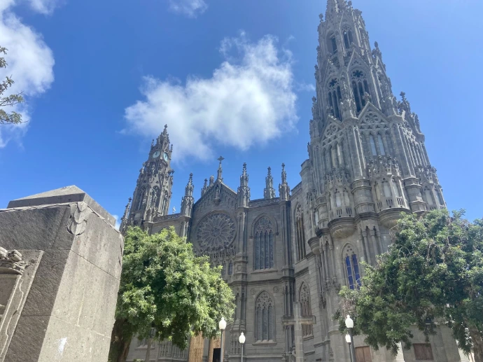
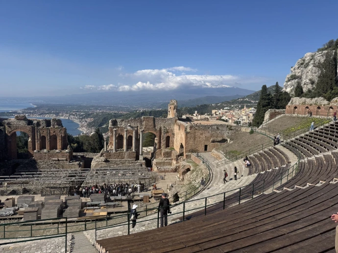
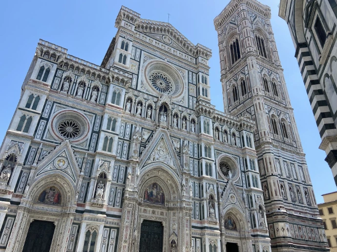
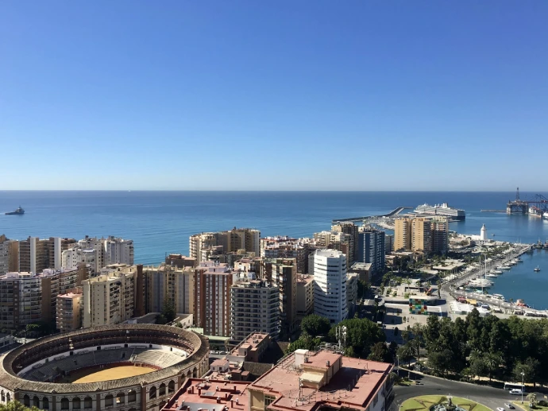
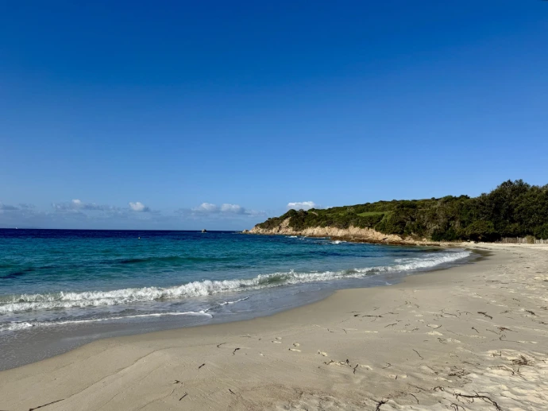

Elles ont toutes un point commun : je les ai moi-même découvertes et j’ai préparé mes propres séjours avant de partir. Je sais donc ce que représente la recherche d’un hébergement, la comparaison des transports, la construction d’un itinéraire, l’organisation des activités et toutes ces petites recherches qui permettent de préparer un voyage dans les moindres détails.
Mais mon objectif n’est pas de reproduire mes voyages.
Je pars de votre destination, de votre budget, de vos envies et de votre façon de voyager pour construire un séjour totalement personnalisé.
Vous rêvez d’un pays que vous ne voyez pas ici ? D’une destination moins connue ? D’un voyage en famille, entre amis, en couple ou avec votre chien ? Parlez-moi de votre projet.
Je suis ouverte à toutes les destinations dans le monde. Et si vous me confiez un projet dans un endroit que je ne connais pas encore, ce sera aussi l’occasion pour moi de partir à sa découverte à travers vos envies.
Mon but n'est pas simplement de vous proposer une destination, je veux vous aider à imaginer l'expérience que vous allez vivre.

Le Japon occupe une place un peu particulière dans cette aventure, puisque j'ai moi-même eu l'occasion d'y réaliser un road trip.
Pendant 16 jours, j'ai découvert 10 villes différentes, en préparant moi-même les différentes étapes, les transports, les hébergements et les visites.
Cette expérience m'a permis de constater à quel point une bonne préparation peut faire la différence, particulièrement pour une destination aussi riche et dépaysante que le Japon.
Aujourd'hui, je peux donc vous accompagner dans la préparation de votre propre voyage au Japon : Tokyo, Kyoto, Osaka, mais aussi des destinations plus éloignées des grands classiques, selon vos envies et le temps dont vous disposez.

Corfou est le genre de destination où l’on peut facilement avoir envie de ne rien faire… et c’est très bien comme ça !
Une journée à découvrir les petites rues et les villages, une autre à explorer l’île, une autre encore à profiter d’une plage ou d’une bonne adresse pour déjeuner.
Je peux vous proposer un séjour qui mélange découverte et détente, en fonction de ce que vous souhaitez réellement faire pendant vos vacances.
Pas besoin de remplir chaque journée : parfois, les meilleurs souvenirs sont ceux qui naissent d’une balade improvisée, d’un endroit découvert par hasard ou d’une après-midi passée à profiter du soleil.

Tenerife, Grande Canarie… Les Canaries offrent une multitude de possibilités pour construire un séjour qui vous ressemble.
Vous aimez marcher et découvrir les paysages ? Nous pouvons intégrer des randonnées et des lieux naturels à votre itinéraire.
Vous préférez les visites, les villages et la gastronomie ? Je peux rechercher les endroits qui méritent une étape.
Vous rêvez surtout de soleil et de moments de détente ? Le programme peut tout simplement laisser davantage de place au repos.
Le but n’est jamais de remplir votre séjour à tout prix, mais de trouver le rythme qui vous correspond.

La Sicile est parfaite pour ceux qui veulent s’évader sans forcément partir longtemps.
Même avec seulement quelques jours, il est possible de créer un joli séjour, à condition de bien réfléchir à son organisation. Chaque journée peut être pensée pour profiter pleinement du temps disponible, sans transformer les vacances en course contre la montre.
Je peux vous aider à trouver le bon équilibre entre les visites, les déplacements, les découvertes culinaires et les moments de détente.
Parce qu’un court séjour bien pensé peut parfois laisser autant de souvenirs qu’un long voyage.

L’Italie est une destination que j’aime particulièrement pour la diversité des expériences qu’elle permet. On peut passer quelques jours à déambuler dans les rues d’une grande ville, prendre le temps de découvrir une région ou partir plusieurs jours sur les routes pour un véritable road trip.
J’aime imaginer un voyage où les étapes s’enchaînent naturellement : une ville à découvrir, un petit village à explorer, une bonne adresse repérée sur le chemin, puis quelques heures pour simplement profiter.
En Italie, je peux vous aider à construire un voyage qui alterne découvertes et moments de liberté, que vous souhaitiez un séjour rythmé par les visites ou, au contraire, prendre davantage le temps de vivre au rythme de la destination.

L’Andalousie est une destination qui se prête particulièrement bien à un voyage itinérant. Séville, Grenade, Cordoue, Malaga, les villages blancs… il y a de quoi remplir un séjour, mais aussi de quoi prendre son temps.
Ce que j’aime dans cette région, c’est pouvoir mélanger les incontournables avec des endroits un peu moins touristiques, s’arrêter dans un village, découvrir une bonne adresse ou simplement profiter d’une terrasse au soleil.
Votre voyage peut être construit autour de la découverte culturelle, de la gastronomie, des paysages ou simplement de l’envie de profiter de l’ambiance andalouse.

La Corse est une destination qui donne envie de prendre la route et de découvrir l’île au fil des étapes.
Sur deux semaines, pourquoi ne pas imaginer un itinéraire du Nord au Sud, en alternant les paysages, les plages, les villages et les différentes ambiances de l’île ?
L’objectif est de ne pas simplement accumuler les lieux à visiter, mais de construire un itinéraire agréable, avec des temps de trajet raisonnables et suffisamment de temps pour profiter de chaque étape.
Une journée peut être consacrée à une découverte, une autre à une randonnée, une autre encore simplement à profiter d’une plage.